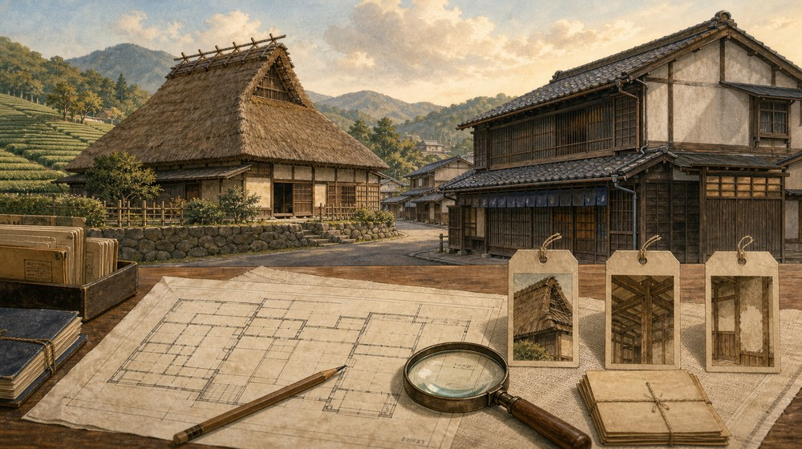
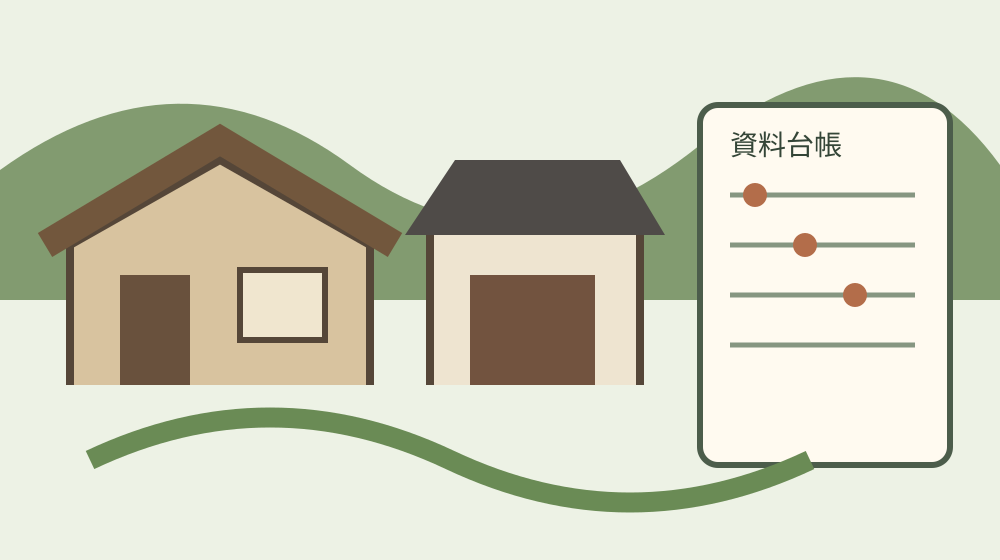
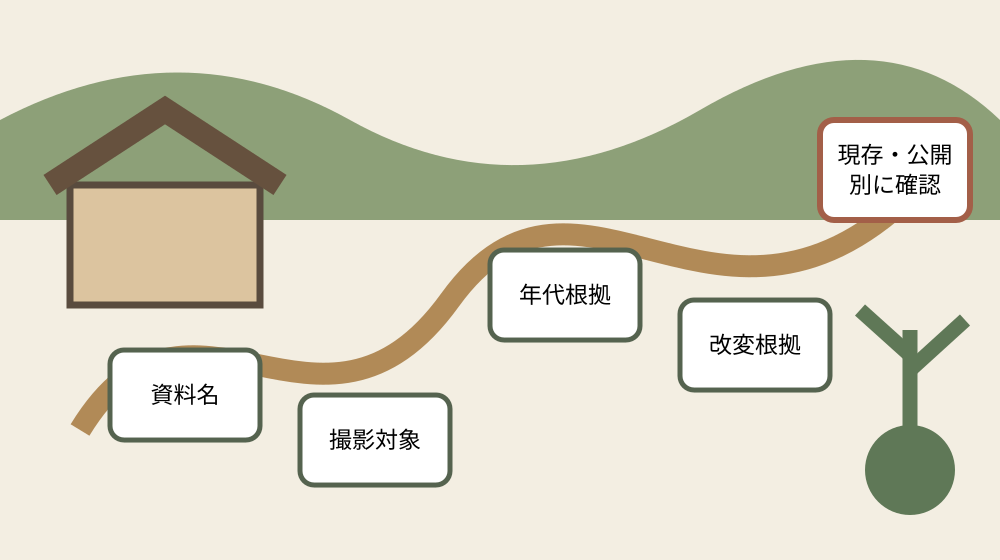

森町の民家を建築年代・間取り・改変根拠で読む資料台帳

結論：築年を一つに決めず、建築・移動・再建・増築・修理・作図の年と、外観・内部・間取図の対象を別々に記録します。個人宅の見学可能性は資料掲載から推定しません。
購入判断ではなく文化資料台帳を作る
この記事が作るのは、古民家を買うか、直せるか、住みやすいかを決める表ではありません。森町公式「44 森町の民家」に掲載された建物、内部、間取図を、資料名、撮影対象、年代根拠、改変根拠、現存・公開確認へ分けて読む文化資料台帳です。
既存の古民家ページや中古住宅購入記事では、耐震、修繕、接道、境界、費用が判断の中心です。本稿では価格、売買、居住性能を扱いません。建物史の根拠を混ぜず、後から別の人が公式資料へ戻れる記録を成果とします。
町公式に個人名を伴って掲載される住宅もありますが、掲載は見学許可を意味しません。個人宅の所在地を細かく推測したり、敷地へ入ったり、訪問を勧めたりしません。現存状況と公開状況は文化振興係や所有者の公式案内で別々に確認します。
台帳の一行は一軒ではなく一資料単位です。同じ友田義範家でも外観写真と内部写真を別行にし、大石家は住宅写真と間取図を別行にします。撮影対象が違えば、そこから読める事実と読めない事実も変わるからです。
公式ページに載る十の資料対象を分ける
森町公式ページは、友田義範家住宅、同家内部、友田義一家の隠居屋、友田貞一家住宅、大石尚男家住宅、大石家間取図、藤江みち子家住宅、同家内部、山本須美夫家住宅、富田茂雄家住宅の十項目を掲げています。
十項目を十棟と数えてはいけません。友田義範家と藤江家は外観・内部の二資料、大石家は外観・間取図の二資料です。台帳には資料番号、資料見出し、建物名、対象部位を置き、資料件数と建物件数を区別します。
場所表記も資料どおりに残します。亀久保、川島、森の本町、城下、一宮の米倉、三倉の乙丸といった地区情報は文化的背景を読む入口ですが、私宅への案内図ではありません。公開版では町公式を超える位置を補いません。
写真提供や所蔵の表示も根拠欄に残します。友田義範家外観には個人写真提供、大石家間取図には個人所蔵とあります。町サイト掲載画像であることと、原資料の所有・利用権が町にあることを同一視しません。
友田三家を同じ年代にまとめない
友田義範家住宅は、1700年に南隣地から現在地へ移ったと伝わり、県下の現存住宅でも最古の部類に属すると説明されます。ここで1700年は現在地への移動年として記録し、建築年と自動的に同義にしません。
同住宅は昭和58年1月から15か月をかけて半解体修理が行われ、平成8年度に茅の葺き替えが行われました。年代台帳には移動、半解体修理、屋根葺替えを別イベントとして置き、現在の姿を1700年当時そのままと表現しません。
内部資料は16畳の広間が村落の議場であったこと、赤松の梁を特徴として挙げます。外観写真から議場利用や梁材を推測せず、内部資料に結び付いた説明として記録します。見学できる室内だとは書きません。
友田義一家の隠居屋は後世の改修が著しい一方、元禄期の部材を残すとされます。建物全体を元禄期と一括せず、元禄期部材あり、改修著しい、という二つの根拠を同じ行に残すのが重要です。
かまや建は棟の構成から読む
友田貞一家住宅は、住居棟と炊事棟の二棟からなる「かまや建」と説明されます。一般的な古民家という語へ薄めず、何が二棟なのかを台帳の構成欄へそのまま転記します。
町公式は、かまや建が現在ではほとんど姿を消した形式であり、同住宅を貴重な存在と位置付けます。珍しさを観光公開へ読み替えず、資料上の評価と現在の公開状況を別欄にします。
友田義範家や友田義一家に次ぐ古いものとされますが、具体的な建築年はこのページの説明から確定できません。「三番目に古い」と数値化せず、比較表現を原文の範囲で残します。
二棟に分かれることは、後世の増築や別棟化を意味するとは限りません。写真から接続年代を推定せず、かまや建という形式説明、住居棟、炊事棟、年代未確定の四欄に分けます。
大石家は商家説明と間取図の年を分ける
大石尚男家住宅は、江戸後期に古着、茶、椎茸、炭などを扱った商家で、城下の藤江家と並ぶ町屋と説明されます。取扱品目は建物用途の背景として残し、現在の商業利用や所有者の生業へ延長しません。
大石家間取図の説明には、1779年に建てられた住宅を1859年に図面へ写したとあります。建築年1779年と作図年1859年は八十年離れているため、同じ年代欄へ一つだけを書くと資料の意味が失われます。
その図は建物の方位を割り出して吉凶を占うものと説明されます。現況測量図や建築確認図ではありません。間取りを読むときも、1859年時点の表現、占いの目的、個人所蔵という三条件を添えます。
間取図に描かれた部屋が現在も同じ位置にあるとは断定できません。現存建物の確認、図の対象住宅との同一性、後世改変はそれぞれ未確認欄へ置き、現地訪問で確かめようとしません。
藤江家は再建と大正期改変を二層で残す
藤江みち子家住宅は1863年に再建されたもので、大正年間に修理や改造が行われたと説明されます。1863年を家の起源とせず、再建年として記録し、それ以前の履歴はこのページだけでは分からないとします。
大正年間という幅のある表現は、特定年へ補いません。修理と改造も別の行為ですが、町公式は範囲や部位を詳述していません。台帳では時期「大正年間」、種別「修理・改造」、部位「未記載」とします。
内部写真は「みせ」と呼ばれる部分を対象にし、内外を隔てるしとみ戸が当時のままと説明します。「当時」が1863年再建時か別の基準時かを記事側で決めず、公式説明の語として引用位置を残します。
住宅全体が当時のままだという意味ではありません。外観資料は大正期の修理・改造を伝え、内部資料はしとみ戸の残存を伝えます。対象部位を限定することで、保存と改変が同じ建物に共存することを示せます。
山本家と富田家は生活史の資料として読む
山本須美夫家住宅は、座敷が明治期の増築で、豪農の風格を感じさせるものと説明されます。建物全体の建築年ではなく、座敷の増築時期として記録します。外観の印象語と年代根拠を分けます。
増築は古さを損なう情報ではありません。家族構成、接客、地域での役割が変わった可能性を考える入口です。ただし、増築理由は公式ページに書かれていないため、豪農という説明から用途を作りません。
富田茂雄家住宅は山間の乙丸にあり、夏場は畳を上げて板敷で生活すると説明されます。これは間取りではなく季節による室内利用の記録です。固定された展示状態とも、現在も続く習慣とも断定しません。
正月の年とりに家内が囲炉裏の周りへ集まり鮭を焼いて食べたという記述は、住まいと年中行事を結ぶ聞き取り資料です。建物年代の証拠とは別欄に置き、生活伝承として出典を付けます。
良い点：認定地域計画と資料台帳をつなぐ
森町の認定地域計画は、地域の歴史文化資産を保存・活用するための法定計画として位置付けられます。民家資料台帳は、指定建造物だけを列挙するのではなく、写真、間取図、生活伝承、改変履歴を関連付ける小さな実践になります。
計画の認定は個々の住宅が公開施設になったことを意味しません。指定、登録、計画掲載、図説ページ掲載、現存確認、公開確認を別々の列にします。どれか一つを満たすことから他を推定しません。
友田義範家が国文化財、友田義一家住宅が県文化財と町公式は説明します。一方、ほかの掲載民家について同じページだけで指定区分を補いません。指定状況は認定地域計画や文化財一覧の最新版へ戻って確認します。
文化資料台帳の価値は、見学先を増やすことではなく、資料の散逸と誤読を防ぐことです。個人所蔵図や個人提供写真は、公開範囲、転載可否、原本所在を確認し、画像を無断で複製しません。
対案・結論：家族が残せる十二列を決める
台帳は、資料番号、公式見出し、建物名、地区、資料種別、撮影対象、建築・再建・移動年、年代根拠、修理・改造、平面・部位、所蔵・提供表示、現存・公開確認日の十二列にします。
年代欄には根拠の動詞も残します。建てられた、再建された、移った、増築された、図面に写した、修理した、葺き替えたは同じ出来事ではありません。西暦だけを抜き出さないことが台帳の中心です。
写真資料を家族で持つ場合は、写っている家名を推測で確定しません。裏書、撮影者、推定年代、比較した町公式資料、似ている部分、異なる部分を記録し、個人宅の詳細位置を公開共有しません。
現存欄は、町公式ページ掲載確認、外部からの安全な確認、所有者等の公開情報、未確認から選びます。公開欄も、常時公開、催事時公開、要問合せ、非公開、未確認を分け、未確認を見学可能へ変えません。
大石の視点：年代を一つに決めない
私は古い家を見るとき、築年数を一つに決める前に、主屋、座敷、炊事棟、屋根、建具、間取図の年代を分けます。一軒の家に複数の時間が重なっていることこそ、古民家の大切な情報だと考えるからです。
不動産実務では、文化資料の年代と耐震性、劣化、登記、接道、境界は別に確認します。1779年建築という資料があっても現況調査の代わりにはならず、大正期改造の記録だけで工事範囲や安全性を決められません。
売る予定がない実家でも、古写真、間取図、修理領収書、棟札の写し、家族の聞き取りを資料名と確認日で束ねる価値があります。体験していない話を実話に仕立てず、誰からいつ聞いたかを残します。
今日できる一歩は、森町公式の十項目を十行に転記し、年代の動詞と対象部位を丸で囲むことです。その後、現存・公開は未確認のまま文化振興係の公式案内を確認します。訪問ではなく、資料を正しく読むところから始めます。
注文したい点：台帳の読み合わせで止める八つの誤読
第一に、ページ見出しの人名を現在の所有者名だと決めません。図説が作られた時点、写真提供時点、現在では名義や呼称が変わる可能性があります。台帳には公式見出しを資料名として保存し、現在名義は登記や本人確認なしに補いません。
第二に、町公式の写真を現在撮影された写真だと扱いません。ページ更新日は2019年3月5日ですが、掲載写真の撮影年を示すとは限りません。ウェブ更新日、図説の編集時期、撮影時期、建物の出来事をそれぞれ別の年代欄へ置きます。
第三に、写真の姿から茅、瓦、板壁などの材料が創建時から続くと推定しません。友田義範家のように葺替え記録が明示される建物もあります。材料は写真観察、修理記録、創建時仕様の三列に分け、分からない列を埋めません。
第四に、内部写真一枚から家全体の間取りを復元しません。16畳広間、赤松の梁、しとみ戸、板敷、囲炉裏はそれぞれ特定の室や季節利用に関する情報です。画面外の部屋、動線、増改築部分は間取図や調査報告がなければ未確認です。
第五に、「江戸後期」「元禄期」「明治期」「大正年間」という幅のある時代表現を、便宜的に一つの西暦へ置き換えません。検索や並べ替えが必要なら開始年・終了年を推定入力せず、時代表現欄を用意して原文の粒度を守ります。
第六に、再建、移築、増築、半解体修理、改造、葺替えをすべて改修とまとめません。再建は建物の履歴、移築は場所の履歴、増築は平面の履歴、葺替えは屋根の履歴です。対象部位と行為を残すほど、次の資料調査が具体的になります。
第七に、文化財指定を建物全体が不変である証明にしません。指定建造物にも修理や部材更新はあり得ます。指定名称、指定範囲、修理履歴、現況を別々に確認し、地域計画での位置付けも最新版の本文と一覧へ戻ります。
第八に、現存確認と公開確認を一度の連絡で兼ねません。建物が現存していても生活の場なら非公開です。公式の公開案内が見つからない場合は「公開未確認」とし、所有者を探して直接連絡する行動へ誘導しません。文化振興係の案内を入口にします。
台帳を更新するときは、古い判断を消さず確認日を増やします。町公式ページの更新、地域計画の改訂、新しい調査報告の公開があれば、以前の記述が誤りだったと即断せず、どの資料時点で何が分かったかを時系列にします。
資料写真を引用する場合は、出典を書けば自由に転載できるとは考えません。町サイトの利用条件、個人写真提供、個人所蔵の表示を確認し、本稿では原写真を複製せず、資料の読み方を独自の編集図で示します。
家族の聞き取りは、話者、聞取日、対象建物、確信度を付けます。「昔からある」「戦前に直した」という記憶は重要ですが、公的資料の年代と同じ欄へ上書きせず、次に修理記録や写真を探す手掛かりとして保存します。
台帳の公開版からは、個人宅の詳細位置、連絡先、非公開室内の推測を外します。研究用原票と公開用要約を分ければ、文化資料を次代へ残しながら、現在そこで暮らす人の静穏とプライバシーも守れます。

公式資料から直接確認できる事実
- 友田義範家は1700年に南隣地から現在地へ移ったと伝わる
- 同家は昭和58年1月から15か月の半解体修理を受けた
- 平成8年度に茅葺きを更新した
- 内部の16畳広間は村落の議場だった
- 友田義一家住宅は元禄期部材を残す一方、後世改修が著しい
- 友田貞一家住宅は住居棟と炊事棟からなるかまや建
- 大石家住宅は江戸後期の商家
- 大石家間取図は1779年建築の住宅を1859年に作図したもの
- 藤江家住宅は1863年再建
- 同家は大正年間に修理・改造を受けた
- 藤江家内部のしとみ戸は当時のままと説明される
- 山本家の座敷は明治期の増築
- 富田家では夏に畳を上げ板敷で生活したと記録される

よくある質問
町公式に載る民家は見学できますか。
掲載だけでは見学可能と判断できません。個人宅を含むため、公開状況は文化振興係や所有者の公式案内で確認し、無断訪問をしません。
友田義範家は1700年築ですか。
町公式は1700年に南隣地から現在地へ移ったと説明します。移動年を建築年へ読み替えず、年代根拠の動詞を残します。
大石家間取図は1779年作成ですか。
町公式は1779年に建てられた住宅を1859年に図面へ写したと説明します。建築年と作図年を別欄にします。
古い間取図で現在の改修範囲が分かりますか。
分かりません。歴史資料と現況は別です。現況の安全性や工事範囲は所有者の資料と専門調査で確認します。